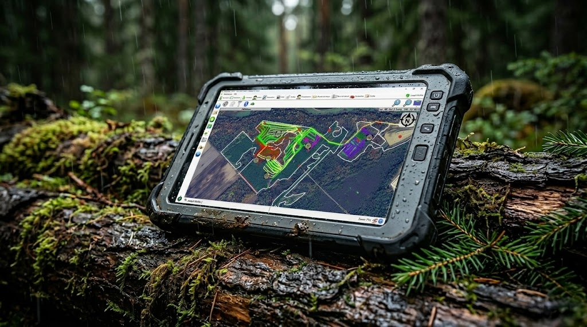

Pendant des décennies, la collecte de données terrain en foresterie au Québec s'est faite de la même manière : des cahiers de terrain, des formulaires papier préremplis, des GPS portatifs et des boîtes de classement débordantes au bureau. Ce modèle a fonctionné, mais à un coût énorme en temps, en erreurs et en inefficacité. Aujourd'hui, la transition vers des applications de collecte de données forestières numériques est en cours, et les entreprises qui l'adoptent découvrent des gains de productivité qu'elles n'auraient pas crus possibles. Ce guide détaille tout ce que vous devez savoir pour réussir cette transition.
L'évolution de la collecte de données forestières au Québec
L'histoire de la collecte de données terrain en foresterie québécoise peut se résumer en trois grandes phases. La première, dominée par le papier et le crayon, a duré jusque dans les années 2000. Les forestiers remplissaient des formulaires standardisés sur le terrain, les rapportaient au bureau, et des commis les retranscrivaient dans des bases de données ou des tableurs. Les délais de traitement se comptaient en semaines, et les taux d'erreur étaient significatifs.
La deuxième phase a vu l'introduction des GPS portatifs et des premiers logiciels de bureau, mais sans véritable intégration. Les données GPS vivaient dans un système, les feuilles de temps dans un autre, la production dans un tableur et les rapports du MRNF dans un quatrième. La prolifération des outils a réduit certaines inefficacités tout en créant de nouveaux silos de données.
La troisième phase, celle dans laquelle nous nous trouvons actuellement, est celle de la collecte numérique intégrée. Un seul appareil de terrain, typiquement une tablette robuste, capture l'ensemble des données, les valide en temps réel et les synchronise avec le système central. C'est cette approche qui génère les gains de productivité les plus significatifs.
Les types de données collectées sur le terrain forestier
La diversité des données collectées sur un chantier forestier est souvent sous-estimée. Un logiciel de relevé terrain complet doit pouvoir capturer :
Les données géospatiales constituent le fondement de toute opération forestière. Cela inclut les tracés GPS (chemins parcourus, limites de blocs), les waypoints (points d'intérêt, obstacles, traverses de cours d'eau) et les polygones (aires coupées, zones tampons, aires de dépôt). La précision de ces données est critique pour la conformité réglementaire et la planification.
Les photos géoréférencées documentent visuellement l'état des chantiers, les conditions de terrain, les inspections environnementales et les problématiques rencontrées. L'association automatique de coordonnées GPS et d'horodatage à chaque photo crée une documentation irréfutable.
Les données opérationnelles englobent les feuilles de temps, le suivi de production par essence et par machine, les registres de carburant, les rapports de maintenance et les bons de livraison. Ces données alimentent la facturation, la gestion de paie et les rapports de performance.
Les inspections et formulaires incluent les relevés environnementaux, les vérifications de conformité, les rapports de voirie forestière et les évaluations de qualité de coupe. Chaque type d'inspection a ses propres champs, validations et exigences de documentation.
Les défis uniques de la collecte de données en milieu forestier
L'absence de connectivité internet
Le défi le plus fondamental de la collecte de données en forêt est l'absence quasi totale de couverture cellulaire sur la majorité des chantiers forestiers québécois. Tout logiciel de relevé terrain qui dépend d'une connexion internet est inutilisable dans ce contexte. Le fonctionnement 100 % hors ligne n'est pas une fonctionnalité optionnelle, c'est un prérequis absolu. L'application doit stocker localement toutes les données, les cartes, les formulaires et les références nécessaires au travail quotidien.
Les conditions environnementales extrêmes
Les chantiers forestiers soumettent l'équipement à des conditions que peu d'autres industries imposent. Les températures varient de -40 °C à +35 °C selon la saison, la pluie, la neige et la poussière sont omniprésentes, et les vibrations de la machinerie lourde mettent à l'épreuve la durabilité de tout appareil électronique. Les opérateurs portent des gants épais qui rendent l'utilisation d'écrans tactiles standard pratiquement impossible.
La nécessité de tablettes robustes
Pour ces raisons, le choix de l'équipement est aussi important que le choix du logiciel. Les tablettes durcies de catégorie militaire (certifications IP67, MIL-STD-810G) sont le standard de l'industrie. Ces appareils résistent aux chutes de 1,2 mètre sur du béton, fonctionnent dans des plages de température extrêmes et disposent d'écrans lisibles en plein soleil avec prise en charge des gants. L'investissement dans du matériel de qualité est essentiel pour assurer la fiabilité de la collecte de données jour après jour.
Fonctionnalités essentielles d'une application de collecte terrain
Fonctionnement hors ligne complet
Le fonctionnement hors ligne signifie que toutes les fonctionnalités de l'application sont disponibles sans connexion : saisie de formulaires, enregistrement GPS, prise de photos, consultation des cartes et des documents de référence. Les données saisies hors ligne sont stockées dans une base de données locale et synchronisées automatiquement dès qu'une connexion est détectée.
Synchronisation Bluetooth et cloud
La communication entre les appareils de terrain peut se faire par Bluetooth lorsque plusieurs tablettes doivent partager des données sans connexion internet. La synchronisation cloud via Wi-Fi ou réseau cellulaire intervient dès qu'une connexion est disponible, typiquement au camp forestier en fin de journée ou en bordure de route lors des déplacements.
Personnalisation des formulaires et importation
Chaque entreprise forestière a des besoins de collecte de données spécifiques. Un bon logiciel de collecte de données forestières doit offrir des capacités de personnalisation des formulaires pour s'adapter aux exigences de chaque donneur d'ouvrage et de chaque type d'opération.
La compatibilité avec les standards ouverts est un atout majeur. Le format XLSForm, utilisé par des plateformes comme Fulcrum et ArcGIS Survey123, permet de définir des formulaires complexes avec des logiques conditionnelles, des validations et des calculs automatiques dans un simple fichier Excel. La possibilité d'importer ces formulaires dans l'application de terrain accélère considérablement le déploiement de nouveaux types de collecte et permet de tirer parti de l'immense bibliothèque de formulaires existants dans l'écosystème XLSForm.
L'intelligence artificielle au service de la collecte terrain
L'intégration de l'intelligence artificielle dans les applications de collecte de données terrain ouvre de nouvelles possibilités pour les forestiers. Comme détaillé dans notre article sur l'intégration de l'IA dans MobileLogix, les avancées récentes permettent des fonctionnalités jusqu'ici inimaginables sur le terrain.
Le chatbot forestier intelligent embarqué dans l'application répond aux questions techniques des opérateurs en temps réel : identification d'essences, normes de mesurage, réglementations de coupe, meilleures pratiques. Cette base de connaissances accessible en forêt réduit les erreurs liées au manque d'information et accélère la formation des nouveaux employés.
La lecture vocale intelligente permet aux opérateurs de machinerie de consulter les réponses et les instructions sans quitter le chantier des yeux, une fonctionnalité critique pour la sécurité en cabine. Le système lit les informations phrase par phrase, dans un rythme naturel adapté au contexte de travail.
La génération automatique de rapports transforme les données brutes collectées pendant la journée en rapports structurés prêts à être envoyés au donneur d'ouvrage. Ce qui prenait des heures de compilation manuelle en fin de journée se fait maintenant en quelques secondes grâce à l'IA.
La synchronisation des données : le maillon critique
La valeur des données collectées sur le terrain ne se matérialise que lorsqu'elles atteignent le bureau. SyncLogix assure cette synchronisation des données terrain de manière fiable et transparente. Le système détecte automatiquement les connexions réseau disponibles (Wi-Fi, cellulaire) et transmet les données de manière bidirectionnelle : les données de terrain montent vers le serveur, et les mises à jour de planification descendent vers les tablettes.
La synchronisation est conçue pour être résiliente : en cas d'interruption de connexion, le transfert reprend exactement où il s'était arrêté. Les conflits de données, lorsque la même information a été modifiée au terrain et au bureau, sont gérés par des règles de priorité configurables. Le résultat est une base de données centrale toujours à jour qui reflète l'état réel des opérations.
Conformité gouvernementale : MRNF et exportation RATF
La conformité avec les exigences du MRNF (Ministère des Ressources naturelles et des Forêts) est une obligation incontournable pour toute entreprise forestière au Québec. Les rapports d'activités de terrain forestier (RATF) doivent être produits dans des formats spécifiques et contenir des données structurées selon les normes gouvernementales.
Un logiciel de collecte de données forestières bien conçu intègre ces normes directement dans ses formulaires de saisie. Les validations automatiques vérifient la conformité des données au moment de la saisie plutôt qu'après coup, évitant les rejets et les corrections tardives. L'exportation RATF se fait en quelques clics, avec un fichier conforme aux spécifications du ministère, prêt à être soumis sans modification.
Les standards de données du gouvernement du Québec évoluent régulièrement. Un logiciel activement maintenu intègre ces changements de manière proactive, garantissant que vos données sont toujours conformes aux dernières exigences sans intervention manuelle de votre part.
Passez du papier au numérique dès maintenant
La transition du papier au numérique pour la collecte de données terrain n'est plus un projet d'avenir, c'est une nécessité présente. Les entreprises qui continuent avec des processus manuels perdent du temps, de l'argent et de la compétitivité chaque jour. La bonne nouvelle, c'est que les solutions sont matures, éprouvées et adaptées aux réalités spécifiques de la foresterie québécoise.
G.A. Logix accompagne les entreprises forestières dans cette transition depuis plus de deux décennies. Nos solutions ont été conçues sur le terrain, testées dans les conditions les plus exigeantes et déployées auprès de centaines d'utilisateurs à travers le Québec. Contactez notre équipe pour une démonstration personnalisée et découvrez comment transformer votre collecte de données terrain.